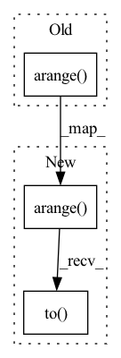

Pattern ID :694
Before Change
src_ids = torch.zeros(self.B * (self.window_size - 1), dtype=torch.int64) // B*(window - 1)
// loop for each batch
for i in range(self.B):
win_ids = torch.arange( i * self.window_size + 1, i * self.window_size + self.window_size)
tgt_desc = keypoint_desc[win_ids] // (window - 1) x C x N
tgt_desc = F.normalize(tgt_desc, dim=1)
match_vals = torch.matmul(tgt_desc.transpose(2, 1), src_desc_unrolled[i:i+1]) // (window - 1) x N x HW
soft_match_vals = F.softmax(match_vals / self.softmax_temp, dim=2) // (window - 1) x N x HWAfter Change
src_ids = torch.zeros(self.B * (self.window_size - 1), dtype=torch.int64, device=self.gpuid) // B*(window - 1)
// loop for each batch
for i in range(self.B):
win_ids = torch.arange(i * self.window_size + 1, i * self.window_size + self.window_size).to( self.gpuid)
tgt_desc = keypoint_desc[win_ids] // (window - 1) x C x N
tgt_desc = F.normalize(tgt_desc, dim=1)
match_vals = torch.matmul(tgt_desc.transpose(2, 1), src_desc_unrolled[i:i+1]) // (window - 1) x N x HW
soft_match_vals = F.softmax(match_vals / self.softmax_temp, dim=2) // (window - 1) x N x HWIn pattern: SUPERPATTERN
Frequency: 6
Non-data size: 3
Instances Fragment ID: 2694472
Project Name: utiasasrl/hero_radar_odometry
Commit Name: f2b4852af09f7b5f26009b68933c71f7a5bf84e7
Time: 2021-03-17
Author: keenburn2004@gmail.com
File Name: networks/softmax_ref_matcher.py
M Class Name: SoftmaxRefMatcher
N Class Name: SoftmaxRefMatcher
M Method Name: forward(4)
N Method Name: forward(4)
M Parent Class: nn.Module
N Parent Class: nn.Module
M File Name: networks/softmax_ref_matcher.py
N File Name: networks/softmax_ref_matcher.py
M Start Line: 39
M End Line: 39
N Start Line: 39
N End Line: 39
Before Change
with torch.cuda.device_of(x):
disp_u = torch.reshape(
torch.arange(
-self.max_u,
self.max_u + 1,
dtype=torch.float32,
) ,
[1, sizeU, 1, 1, 1],
)
disp_u = disp_u.expand(B, -1, sizeV, H, W).contiguous()After Change
x = x.squeeze(1)
B, _, _, H, W = x.shape
disp_u = torch.reshape(
torch.arange(
-self.max_u,
self.max_u + 1,
dtype=torch.float32,
),
[1, sizeU, 1, 1, 1],
).to( x.device)
disp_u = disp_u.expand(B, -1, sizeV, H, W).contiguous()
disp_u = disp_u.view(B, sizeU * sizeV, H, W)
disp_v = torch.reshape( Fragment ID: 2694477
Project Name: neu-vig/ezflow
Commit Name: 223fb230b02e3bb5782c91cd92007b611e0b78e9
Time: 2021-12-06
Author: shahnh19@gmail.com
File Name: ezflow/decoder/noniterative/soft_regression.py
M Class Name: SoftArg2DFlowRegression
N Class Name: SoftArg2DFlowRegression
M Method Name: forward(2)
N Method Name: forward(2)
M Parent Class: nn.Module
N Parent Class: nn.Module
M File Name: ezflow/decoder/noniterative/soft_regression.py
N File Name: ezflow/decoder/noniterative/soft_regression.py
M Start Line: 63
M End Line: 90
N Start Line: 63
N End Line: 86
Before Change
self.safe_radius = safe_radius
def forward(self, anchor, positive, dist_keypts):
pids = torch.FloatTensor(np.arange( len(anchor)) )
if torch.cuda.is_available():
pids = pids.cuda()
// if self.metric == "euclidean":After Change
self.safe_radius = safe_radius
def forward(self, anchor, positive, dist_keypts):
pids = torch.FloatTensor(np.arange(len(anchor))).to( anchor.device)
dist = cdist(anchor, positive, metric=self.metric)
dist_keypts = np.eye(dist_keypts.shape[0]) * 10 + dist_keypts.detach().cpu().numpy()
add_matrix = torch.zeros_like(dist)
add_matrix[np.where(dist_keypts < self.safe_radius)] += 10 Fragment ID: 2694467
Project Name: xuyangbai/d3feat.pytorch
Commit Name: 41b6b76a3d240e1e6d59970c4f243051f37d6233
Time: 2020-05-24
Author: 653823597@qq.com
File Name: utils/loss.py
M Class Name: ContrastiveLoss
N Class Name: ContrastiveLoss
M Method Name: forward(4)
N Method Name: forward(4)
M Parent Class: nn.Module
N Parent Class: nn.Module
M File Name: utils/loss.py
N File Name: utils/loss.py
M Start Line: 66
M End Line: 77
N Start Line: 67
N End Line: 73
Before Change
avg_target = target.mean(dim=3)
bin_size = self.max_pixel_val / self.output_channel_bits
channel_bins = torch.arange( bin_size, self.max_pixel_val, bin_size)
discretized_target = torch.bucketize(avg_target, channel_bins)
discretized_target = F.one_hot(discretized_target,
self.output_channel_bits)
c, bi = self.channels, self.output_channel_bitsAfter Change
avg_target = target.mean(dim=3)
bin_size = self.max_pixel_val / self.output_channel_bits
channel_bins = torch.arange(bin_size, self.max_pixel_val, bin_size).to( avg_target.device)
discretized_target = torch.bucketize(avg_target, channel_bins)
discretized_target = F.one_hot(discretized_target,
self.output_channel_bits)
c, bi = self.channels, self.output_channel_bits Fragment ID: 2694469
Project Name: lucidrains/vit-pytorch
Commit Name: e75b6d025102216e9cce7fa9d9db2568cff985d7
Time: 2021-05-16
Author: loctruong96@gmail.com
File Name: vit_pytorch/mpp.py
M Class Name: MPPLoss
N Class Name: MPPLoss
M Method Name: forward(4)
N Method Name: forward(4)
M Parent Class: nn.Module
N Parent Class: nn.Module
M File Name: vit_pytorch/mpp.py
N File Name: vit_pytorch/mpp.py
M Start Line: 52
M End Line: 53
N Start Line: 50
N End Line: 53
Before Change
def forward(self, input_tensor):
// TODO: apply sin - cos functions as stated in `Attention is all you need`
sentence_size = input_tensor.size(-1)
pos_tensor = torch.arange( sentence_size, dtype=torch.long)
pos_tensor = pos_tensor.expand_as(input_tensor)
segment_tensor = torch.zeros_like(input_tensor)
segment_tensor[:, sentence_size // 2 + 1:] = 1After Change
def forward(self, input_tensor):
// TODO: apply sin - cos functions as stated in `Attention is all you need`
sentence_size = input_tensor.size(-1)
pos_tensor = torch.arange(sentence_size, dtype=torch.long).to( device)
pos_tensor = pos_tensor.expand_as(input_tensor)
segment_tensor = torch.zeros_like(input_tensor).to(device)
segment_tensor[:, sentence_size // 2 + 1:] = 1 Fragment ID: 2694471
Project Name: coaxsoft/pytorch_bert
Commit Name: e6ecc6f3056c43a636e7b10573e9856e8a2fe471
Time: 2022-01-14
Author: michkravets@gmail.com
File Name: bert/model.py
M Class Name: JointEmbedding
N Class Name: JointEmbedding
M Method Name: forward(2)
N Method Name: forward(2)
M Parent Class: nn.Module
N Parent Class: nn.Module
M File Name: bert/model.py
N File Name: bert/model.py
M Start Line: 20
M End Line: 24
N Start Line: 23
N End Line: 27